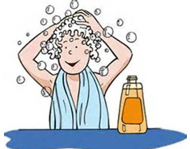

Take Care of Your Hair
How you take care of your hair depends on the type of hair you have, your lifestyle, and how you style your hair. Your hair type: Teens with dry, curly hair have different hair care needs than teens with straight, fine hair. But all hair needs to be treated gently, especially when it's wet. Your hairstyle: Heat styling products like curling and straightening irons can dry out even oily hair if they're used too much. Follow the instructions carefully, and don't use them on wet hair or high settings, and give your hair a vacation from styling once in awhile Do you play sports or spend a lot of time outside? These kinds of things can affect your hair. For example, if you're an athlete with oily hair, you may want to wash your hair after working up a sweat during practice and games.
 Image Source:creativecommons.org